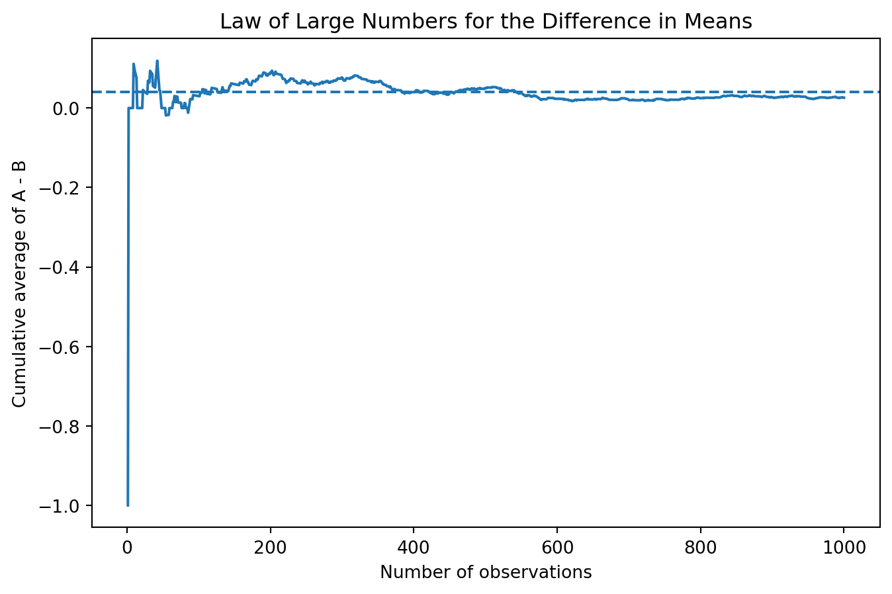

Simulating Key Ideas from Classical Frequentist Statistics
Author
Yirui Xu
Published
April 15, 2026
Introduction
Suppose I run a website with a landing page that invites visitors to sign up for my newsletter. A small change in wording may affect how many visitors actually subscribe, so I want to compare two possible calls to action. In version A, the button text reads “Sign up for our newsletter here!” In version B, it reads “Stay up to date by signing up!”.
To learn which message performs better, I can run an A/B test. In an A/B test, visitors are randomly assigned to one of two versions of a webpage, and I compare outcomes across the two groups. In this case, the outcome of interest is whether a visitor signs up for the newsletter. By comparing sign-up rates between the two CTA groups, I can estimate which version is more effective and use statistical tools to assess how much confidence I should have in that result.
The A/B Test as a Statistical Problem
We can frame this A/B test as a simple statistical problem. For each visitor, the outcome is binary: either the person signs up for the newsletter or does not. That means each individual outcome can be modeled as a Bernoulli random variable.
Let \(\pi_A\) denote the probability that a visitor signs up after seeing CTA A, and let \(\pi_B\) denote the corresponding probability for CTA B. The main quantity of interest is the difference in these two probabilities:
\[
\theta = \pi_A - \pi_B
\]
If \(\theta > 0\), CTA A performs better on average. If \(\theta < 0\), CTA B performs better.
A natural estimator for this quantity is the difference in sample means:
\[
\hat{\theta} = \bar{X}_A - \bar{X}_B
\]
Because each observation is coded as either 1 (signed up) or 0 (did not sign up), the sample mean in each group is just the observed sign-up rate. So \(\bar{X}_A = \hat{\pi}_A\) and \(\bar{X}_B = \hat{\pi}_B\). In other words, estimating the treatment effect in this experiment is simply a matter of comparing the observed proportions across the two groups.
Simulating Data
In practice, we would not know the true values of \(\pi_A\) and \(\pi_B\). In a real A/B test, those probabilities must be inferred from observed user behavior. For the purpose of this exercise, however, it is useful to set the true values ourselves so that we can study how our estimator behaves when we know the truth. I assume that \(\pi_A = 0.22\) and \(\pi_B = 0.18\), so the true treatment effect is \(\theta = 0.04\).
Using these parameters, I simulated 1,000 Bernoulli draws for each group. In this particular simulated sample, the observed sign-up rate was 0.202 for CTA A and 0.176 for CTA B, which gives an estimated treatment effect of \(\hat{\theta} = 0.026\). This estimate is smaller than the true value of 0.04, but that is exactly what we should expect in finite samples: random sampling variation causes the estimator to move around the truth from one sample to the next.
import numpy as npimport pandas as pdimport matplotlib.pyplot as pltfrom scipy.stats import normimport statsmodels.api as smnp.random.seed(495)pi_A =0.22pi_B =0.18n_A =1000n_B =1000theta_true = pi_A - pi_BA = np.random.binomial(1, pi_A, n_A)B = np.random.binomial(1, pi_B, n_B)mean_A = A.mean()mean_B = B.mean()theta_hat = mean_A - mean_Bprint("True theta:", theta_true)print("Sample mean A:", mean_A)print("Sample mean B:", mean_B)print("Theta hat:", theta_hat)
True theta: 0.04000000000000001
Sample mean A: 0.202
Sample mean B: 0.176
Theta hat: 0.026000000000000023
The Law of Large Numbers
The Law of Large Numbers tells us that as the sample size grows, the sample mean converges to the population mean. In the context of this A/B test, that idea gives us confidence that our estimator, \(\hat{\theta} = \bar{X}_A - \bar{X}_B\), should get closer to the true treatment effect \(\theta\) as we observe more and more data.
To illustrate this, I computed the element-wise differences between the CTA A and CTA B draws and then calculated the cumulative average of those differences. The resulting plot shows how the running estimate evolves as the sample grows from 1 observation to 1,000 observations.
diffs = A - Brunning_mean = np.cumsum(diffs) / np.arange(1, len(diffs) +1)plt.figure(figsize=(8, 5))plt.plot(np.arange(1, len(diffs) +1), running_mean)plt.axhline(theta_true, linestyle="--")plt.xlabel("Number of observations")plt.ylabel("Cumulative average of A - B")plt.title("Law of Large Numbers for the Difference in Means")plt.show()print("Final cumulative average:", running_mean[-1])

Final cumulative average: 0.026
At the beginning of the sample, the running average is very noisy because each new observation has a large effect on the estimate. As more observations accumulate, the curve becomes much more stable. In this simulation, the cumulative average ends at 0.026. The main lesson is not that every sample of size 1,000 will land exactly on the truth, but rather that larger samples reduce instability and make the estimator more reliable. This is the intuition behind why large-sample statistics work at all.
Bootstrap Standard Errors
Once we have an estimate of the treatment effect, the next question is how precise that estimate is. A point estimate alone is incomplete because it does not tell us how much uncertainty surrounds it. To communicate uncertainty, we need a standard error and, ideally, a confidence interval.
The bootstrap is a resampling method that estimates the variability of a statistic without requiring a complicated closed-form derivation. The idea is simple: repeatedly resample from the observed data with replacement, recompute the statistic each time, and then use the standard deviation of those resampled statistics as an estimate of the standard error.
Here, I generated 1,000 bootstrap resamples from each group and computed the treatment effect for each resample.
Bootstrap SE: 0.017538860014567954
Analytical SE: 0.017499142836150578
95% CI lower: -0.008376165628553166
95% CI upper: 0.06037616562855321
The bootstrapped standard error is 0.01754, while the analytical standard error is 0.01750. These two values are extremely close, which is reassuring: the resampling-based estimate and the formula-based estimate tell essentially the same story.
Using the bootstrapped standard error, the 95% confidence interval for \(\theta\) is approximately:
\[
[-0.00838,\ 0.06038]
\]
This interval includes zero, which means the data are consistent both with a small positive effect and with no effect at all. Substantively, the estimate favors CTA A, but the uncertainty is still large enough that we cannot make a strong claim that A truly outperforms B in this simulated sample.
The Central Limit Theorem
The Central Limit Theorem states that, regardless of the shape of the underlying population distribution, the sampling distribution of the sample mean becomes approximately Normal as the sample size grows. Since our estimator \(\hat{\theta}\) is a difference in sample means, the same logic applies here as well.
To visualize this, I repeatedly simulated \(\hat{\theta}\) 1,000 times for each of four sample sizes: \(n = 25, 50, 100,\) and \(500\). For each sample size, I drew \(n\) observations from each Bernoulli group, computed the difference in means, and then plotted the resulting sampling distribution.
The four histograms show the CLT in action. When \(n = 25\), the distribution is still somewhat rough and irregular. By \(n = 50\), it is already becoming more centered and more bell-shaped. At \(n = 100\), the shape looks smoother and more symmetric, and by \(n = 500\), the distribution is clearly tightly concentrated and approximately Normal. This is exactly why the Normal approximation becomes so useful in large-sample inference.
Hypothesis Testing
Now that we have seen why \(\hat{\theta}\) is approximately Normal in large samples, we can use that result to conduct a hypothesis test. The null hypothesis is:
\[
H_0: \theta = 0
\]
which says that the two CTAs have the same sign-up rate. The alternative is:
\[
H_1: \theta \neq 0
\]
which says that the two CTAs differ.
To test this, we standardize the estimated treatment effect:
\[
z = \frac{\hat{\theta} - 0}{SE(\hat{\theta})}
\]
The logic is straightforward. First, the CLT tells us that \(\hat{\theta}\) is approximately Normal for large samples. Under the null, that distribution is centered at 0. Second, dividing by the standard error converts the statistic to something approximately distributed as a standard Normal random variable. Once we know the null distribution of the test statistic, we can compute a p-value.
This test is often casually called a “t-test,” but in this setting it is more accurate to think of it as a large-sample z-test. The classical t-test relies on exact Normal-theory results with estimated variance. Here the underlying data are Bernoulli, not Normal, so the exact t-distribution result does not apply. Instead, the CLT gives us an approximate Normal reference distribution, which is enough for large samples.
For this sample, the test statistic is \(z = 1.4858\), and the corresponding two-sided p-value is 0.1373. Since this p-value is larger than 0.05, I fail to reject the null hypothesis at the 5% significance level. In other words, although the estimated difference is positive, the evidence is not strong enough to conclude that the two CTAs produce different sign-up rates in this simulated sample.
The T-Test as a Regression
The two-sample test above can also be written as a simple linear regression. This is useful because it shows that the same regression framework used throughout applied statistics also reproduces familiar experimental comparisons.
To do this, I stacked the A and B observations into one dataset. The outcome variable \(Y_i\) equals 1 if the visitor signed up and 0 otherwise. I then created an indicator variable \(D_i\), which equals 1 for visitors assigned to CTA A and 0 for visitors assigned to CTA B. The regression model is:
\[
Y_i = \beta_0 + \beta_1 D_i + \varepsilon_i
\]
In this setup, \(\beta_0\) is the mean outcome for group B, and \(\beta_0 + \beta_1\) is the mean outcome for group A. That means \(\beta_1 = \pi_A - \pi_B = \theta\). So the regression coefficient on the treatment indicator should match the difference in means estimator exactly.
The regression coefficient estimate is \(\hat{\beta}_1 = 0.0260\), which is numerically identical to the earlier estimate \(\hat{\theta} = 0.026\). The regression standard error is 0.01751, the t-statistic is 1.4850, and the p-value is 0.1377. These are essentially the same as the values from the earlier two-sample test. The tiny differences come from small implementation details in how standard errors are calculated, but the substantive conclusion is unchanged.
This equivalence matters because regression is far more flexible. In a simple two-group experiment, it reproduces the standard difference-in-means test. But once we move beyond the simplest case, regression makes it easy to add covariates, interactions, or multiple treatment groups while preserving the same inferential logic.
The Problem with Peeking
Suppose my boss is impatient and does not want to wait until all 1,000 visitors per group have been observed. Instead, she wants to check the p-value after every 100 visitors per group and stop the experiment early if any interim result is statistically significant at the 5% level. This sounds reasonable from a business perspective, but it creates a serious problem under classical frequentist statistics.
The issue is that a single hypothesis test at \(\alpha = 0.05\) has a 5% false positive rate under the null. But if we repeatedly test the same experiment while the data accumulate, we create multiple opportunities to generate a false positive. Even if there is truly no treatment effect, the chance of observing at least one “significant” result across many peeks can be much higher than 5%.
To show this, I simulated a world in which the null hypothesis is actually true: \(\pi_A = \pi_B = 0.20\). For each simulated experiment, I generated 1,000 observations for each group, checked the p-value after every 100 observations, and recorded whether any of the ten peeks produced a significant result. I then repeated this process 10,000 times.
Empirical false positive rate under peeking: 0.1976
The empirical false positive rate under this peeking strategy is 0.1976, or about 19.76%. That is far above the nominal 5% false positive rate of a single test. In practical terms, repeated peeking makes it much easier to incorrectly declare a winner when no real difference exists. This is why frequentist A/B testing requires either a fixed stopping rule or a correction for repeated looks at the data.
Conclusion
This simulation study ties together several central ideas from classical frequentist statistics. The Law of Large Numbers explains why the estimator becomes more stable in large samples. The bootstrap gives a practical way to quantify uncertainty. The Central Limit Theorem justifies the Normal approximation that underlies confidence intervals and hypothesis tests. The regression framework shows that difference-in-means testing is part of a broader modeling toolkit. Finally, the peeking exercise highlights how fragile classical inference can become when its assumptions about the testing procedure are violated.
In this simulated A/B test, CTA A performed better in the sample, with an estimated treatment effect of 0.026. However, the confidence interval included zero and the p-value was not small enough to reject the null hypothesis. So while the point estimate leans in favor of CTA A, the evidence is not strong enough to conclude that the difference is statistically significant in this particular experiment.
Overall, that’s why we need to doing the ab-testing.